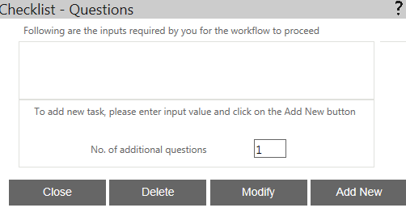
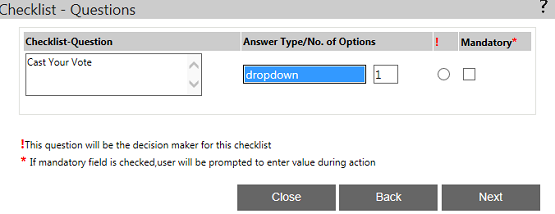
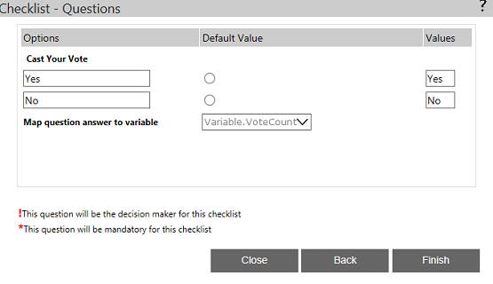

No
CheckList - Questions
Questions Property Window
You can set the questions and answers that will form the checklist in this property window. To access this window, click the button in the 'Questions' property.
The window shown in the image below is used to Add, Edit and View the Questions and Answers added in the Checklist activity. This is the first window in the Questions property user-interface. It lists all the questions that have been added to the checklist. It has the No. of additional questions field to specify the number of questions to add. This window has the following buttons:
- Add New - You can click this button to add new questions. This will open the second window in the Questions user-interface where you can add the questions. The number of questions you can add will depend on the value set in the No. of additional questions field.
- Modify - You can click this button to edit the selected question(s). You can select a question for editing using the check box next to it.
- Delete - You can delete the selected question(s) by selecting them as described above and clicking this button.
- Close - You can click this button to close the window.

Checklist - Listing of Questions, Answers, Decision Maker, Mandatory Questions
The window shown below is the second in the user-interface for adding questions to a checklist. This interface is displayed after the actor selects Add New or Modify from the first window shown above. You can add as many questions as were specified the first window and a separate row of fields is displayed for every new question. For each question, the following parameters can be set here:
- Question - You can enter the question in this text box.
- Answer Type - You can specify the answer type for this question by selecting an option from the drop-down. The options available are text box, drop down, memo, check box, and radio buttons.
- No. of Options - You can specify the number of options of the selected Answer Type in this text box.
- ! - You can click the radio button in this column to specify whether this question is to be the Decision Maker or not. This option is displayed only when you select "drop-down" as the Answer Type. If set, the answer to this question will decide the outcome of the activity.
- Mandatory* - You can click the radio button in this column to make the corresponding question mandatory. If set, the checklist cannot be completed without giving an answer to this question.
This window has the following buttons:
- Back - Click this to go back to the first window
- Next - Click this to go to the next window
- Close - Click this to close the window
The window shown below is the third in the user-interface of the Questions property. In this window you can set the following parameters:
- Options - You can specify the options that will be presented to the actor to answer the question (if the question type is drop down, check box or radio button) in the fields in this column.
- Default Value - You can specify the option that will be the default value by clicking the corresponding radio button in this column.
- Values - You can specify the values that the answer will take internally in the fields in this column.
- Map question answer to variable - In this drop down you can select a variable to which you want to map the question's answer. The answers to this question will be stored in the selected variable and will be available for use in the workflow.
This window has the following buttons:
- Back - Click this to go back to the first window
- Finish - Click this button after completing all the details to save the question
- Close - Click this button to close the window.

The window shown below is the last in the sequence and is displayed when you click Finish in the previous window. It is identical to the first window with the difference being the newly added question that is displayed here. You can modify or delete the new question or add a new question. If you do not wish to perform any more operations, click Close to exit this user interface.
